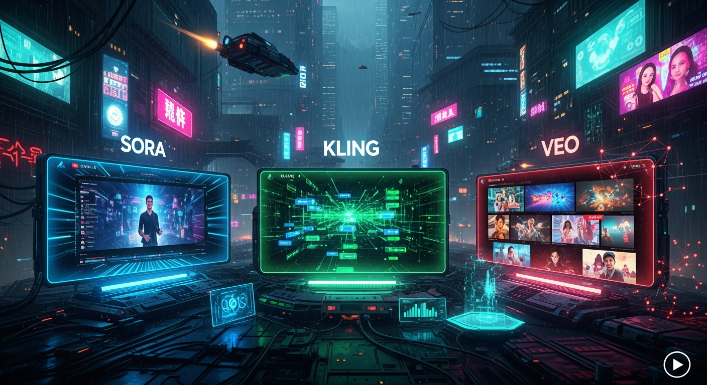

The digital landscape of YouTube is perpetually evolving, but nothing quite prepares us for the seismic shift currently underway in content creation. As we hurtle towards 2026, the promise of artificial intelligence in video generation is not merely a distant dream but a tangible, transformative reality. The ability to conjure stunning visuals, intricate narratives, and dynamic animations from mere text prompts or simple images is democratizing high-quality video production at an unprecedented pace. This revolution is fundamentally reshaping how creators conceive, produce, and distribute their content, shattering traditional barriers of budget, equipment, and expertise. No longer is cinematic quality exclusive to multi-million dollar studios; it is becoming increasingly accessible to the individual creator armed with an innovative idea and a powerful AI tool. This article delves into the highly anticipated showdown between three titans of AI video generation: OpenAI's Sora, Kuaishou's Kling, and Google DeepMind's Veo. Each platform brings a unique philosophy and technological prowess to the table, vying for the attention and loyalty of YouTube creators worldwide. Understanding their distinct strengths, target applications, and underlying methodologies is paramount for any content creator looking to not just survive but thrive in the rapidly approaching, AI-driven future of online video. We will explore how these cutting-edge technologies are set to redefine visual storytelling, offering creators an arsenal of tools to elevate their channels, engage their audiences, and carve out new frontiers in digital entertainment, education, and commerce.
The year 2026 marks a pivotal epoch in the history of digital content creation, particularly for the YouTube ecosystem, as AI video generation transcends its nascent stages to deliver truly hyper-realistic and functionally robust capabilities. The rapid advancements in generative AI models mean that the distinction between traditionally filmed content and AI-generated footage will become increasingly blurred, challenging perceptions and opening up unprecedented creative avenues. This era will be characterized by AI systems that not only synthesize visuals but also comprehend complex narratives, physics, and character consistency across extended sequences, moving far beyond the simple clip generation of previous years. For YouTube creators, this signifies a profound shift from labor-intensive production cycles to iterative, prompt-driven creation, drastically reducing the time and financial investment required to produce high-quality, engaging videos.
The implications for content volume and diversity are staggering. Creators will be able to experiment with a multitude of concepts, styles, and narratives at a fraction of the traditional cost and time. This democratizing effect will empower independent creators, small businesses, and educational channels to compete on a more level playing field with larger studios, fostering an explosion of unique and niche content that previously would have been economically unfeasible. Imagine a history channel effortlessly generating historically accurate battle scenes, a science communicator visualizing complex molecular interactions with photorealistic detail, or a travel vlogger creating immersive tours of places that don't yet exist or are inaccessible. The creative barriers are crumbling, replaced by the boundless potential of AI. However, this transformative power also brings with it significant responsibilities and challenges. The ability to generate convincing deepfakes and misinformation will necessitate robust ethical frameworks, transparency guidelines, and advanced detection mechanisms. YouTube, as a primary distribution platform, will undoubtedly implement stricter policies regarding AI-generated content disclosure, ensuring audience trust and combating malicious uses.
Furthermore, the role of the creator will evolve from a hands-on producer to a visionary director and prompt engineer. Success will hinge less on technical camera skills and editing prowess, and more on imaginative storytelling, effective prompt crafting, and the ability to curate and refine AI outputs to align with a distinct creative vision. The most successful YouTubers will be those who master the art of communicating their ideas to AI models, understanding their nuances, and leveraging their strengths to produce truly original and compelling content. This new workflow will also necessitate a deeper understanding of intellectual property rights, as the lines between human and machine authorship become increasingly ambiguous. Creators will need to navigate licensing agreements for AI models, understanding how their inputs and the AI's outputs are owned and monetized. The computational demands for generating such high-fidelity video will also be a significant factor, with access to powerful GPUs and cloud computing resources becoming a competitive advantage, though the major platforms like Sora, Kling, and Veo will abstract much of this complexity for the end-user. The economic model for AI video generation will likely include tiered subscriptions, pay-per-generation models, and enterprise solutions, influencing how creators budget and monetize their AI-assisted productions. In essence, 2026 is not just about new tools; it's about a fundamental redefinition of what it means to be a video creator in the digital age.
OpenAI's Sora, by 2026, is widely anticipated to solidify its position as the undisputed leader in generating hyper-realistic, cinematic quality video, setting a new benchmark for visual fidelity and narrative coherence. Its core strength lies in its profound understanding of the physical world, leveraging a "world model" approach that allows it to simulate complex interactions, textures, lighting, and camera movements with astonishing accuracy. Unlike earlier generative models that might produce visually impressive but physically inconsistent results, Sora is expected to generate scenes where objects maintain their properties, shadows fall correctly, and characters interact with their environment in a believable manner across extended sequences. This isn't just about generating pretty pictures; it's about creating a coherent, consistent digital reality that mirrors our own, making it an invaluable tool for creators aspiring to produce content with a professional, studio-grade aesthetic.
The target audience for Sora will primarily be professional filmmakers, high-end advertisers, and YouTube creators focused on narrative storytelling, short films, documentaries, and visually rich commercial content. Imagine an independent filmmaker able to generate complex visual effects sequences, elaborate set pieces, or even entire short films without the prohibitive costs and logistical nightmares of traditional production. Sora’s ability to handle intricate camera movements, from sweeping drone shots to dynamic handheld perspectives, and maintain character consistency in appearance and action across various cuts, will be a game-changer. Users will likely have granular control over parameters such as camera lens type, depth of field, time of day, weather conditions, and even the emotional state of AI-generated characters, all controlled through highly sophisticated prompt engineering and intuitive visual interfaces. The sheer computational power required for such fidelity means that while the interface will be user-friendly, the underlying technology is immensely complex, relying on vast datasets and cutting-edge deep learning architectures.
Humanize your text and bypass any AI detector instantly with Undetectable AI.
BYPASS AI DETECTION NOWBeyond its visual prowess, Sora's integration within the broader OpenAI ecosystem will offer significant advantages. Seamless interoperability with advanced language models like GPT-5 for script generation, DALL-E for concept art and storyboarding, and potentially even AI voice synthesis tools, could create a comprehensive, end-to-end AI film studio. This holistic approach would allow creators to ideate, script, visualize, and generate their content within a unified environment, accelerating creative workflows dramatically. However, the pursuit of photorealism also brings its own set of ethical considerations. The potential for generating highly convincing deepfakes and misinformation will continue to be a significant concern, pushing OpenAI to implement robust watermarking, provenance tracking, and content moderation systems. Furthermore, the high computational cost associated with generating such high-fidelity video might translate into a premium pricing model, making Sora a powerful but potentially more expensive option compared to its counterparts. Despite these challenges, Sora's trajectory towards unmatched cinematic realism promises to unlock new frontiers in visual storytelling, empowering a new generation of YouTube creators to produce content that was once the exclusive domain of Hollywood.
While Sora aims for photorealistic fidelity, Kuaishou's Kling is carving out its own formidable niche in the AI video generation landscape by focusing on highly expressive, stylized, and character-driven animation. By 2026, Kling is projected to be the go-to platform for creators who prioritize unique visual aesthetics, dynamic character performances, and the ability to translate imaginative concepts into compelling animated narratives. Leveraging Kuaishou's extensive background in short-form video and its deep understanding of user engagement, Kling is being developed with an emphasis on creative control over artistic styles, character design, and emotional nuance, making it a powerful tool for animators, illustrators, and storytellers who wish to infuse their content with distinctive personality and flair.
Kling's strengths lie in its advanced capabilities for generating consistent characters with a wide range of emotive expressions and body language, allowing creators to convey complex emotions and drive narrative through nuanced performances. This goes beyond simple pose generation; it involves understanding character psychology and how it translates into physical actions and facial expressions, a critical component for engaging animated content. Creators will likely have unparalleled control over stylistic elements, enabling them to produce videos in diverse aesthetics, from classic 2D cartoon styles to intricate 3D animations, stop-motion looks, or even abstract visual narratives. Imagine a YouTube channel dedicated to animated lore, a creator producing stylized explainer videos, or an indie game developer generating animated cutscenes with a unique visual signature – Kling will empower these creators to achieve professional-grade animation without the steep learning curve or extensive resources typically associated with traditional animation pipelines.
The technical architecture of Kling is expected to integrate sophisticated character rigging and animation control systems, allowing users to guide character actions and expressions through intuitive interfaces or advanced text prompts. This focus on "controllability" means that creators won't just generate a video; they'll be directing an animated performance. Furthermore, given Kuaishou's origins, Kling is likely to be optimized for rapid iteration and short-form content creation, making it exceptionally well-suited for platforms like YouTube Shorts, TikTok, and other social media outlets where quick, engaging, and visually distinctive content reigns supreme. Its potential for integration with existing animation software via plugins or APIs could also streamline workflows for professional animators, allowing them to leverage AI for initial drafts, character animation, or background generation, freeing up human artists to focus on higher-level creative direction and refinement. Kling's emphasis on accessibility and its potential for a global user base, particularly in markets with a high demand for animated and stylized content, positions it as a significant contender for creators seeking to differentiate their channels through unique visual storytelling. The platform may also foster a vibrant community of artists sharing styles, character templates, and animation techniques, further accelerating creative output and innovation within its ecosystem. This focus on artistic expression and character-driven narratives ensures Kling will be an indispensable tool for a vast segment of the YouTube creator community by 2026.
Google DeepMind's Veo is positioned to become the most accessible and seamlessly integrated AI video generator for the mainstream YouTube creator community by 2026, leveraging the colossal power and pervasive reach of the Google ecosystem. Unlike Sora's pursuit of ultimate realism or Kling's focus on stylized animation, Veo's strategic advantage lies in its profound integration with Google's vast suite of services, including YouTube Studio... and implement these strategies to ensure long-term success.
In summary, staying ahead of these trends is the key to business longevity and security. By following this guide, you maximize your growth and ensure a stable digital future.
Don't wait for the headlines. Our Private Telegram Channel delivers real-time AI security updates and digital wealth strategies before they go viral. Stay protected. Stay ahead.
⚡ JOIN THE 1% NOW